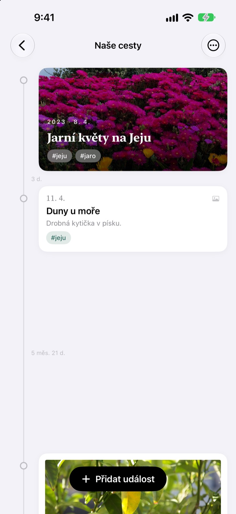
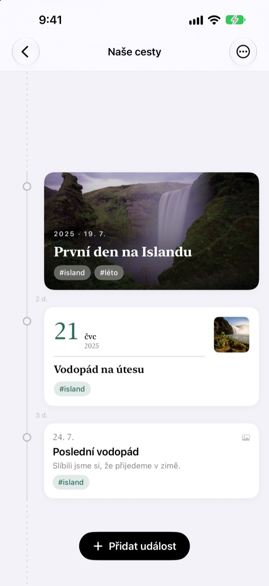
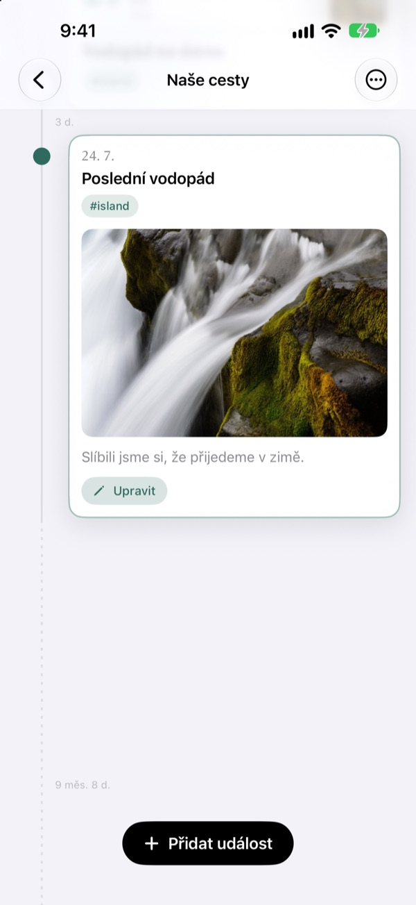
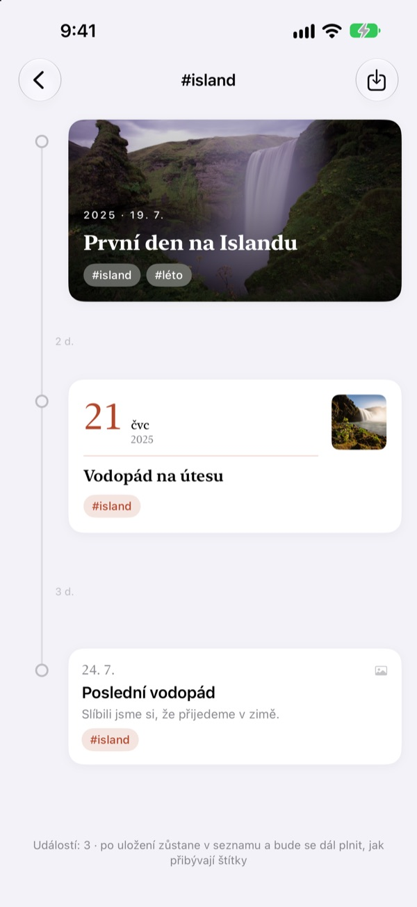
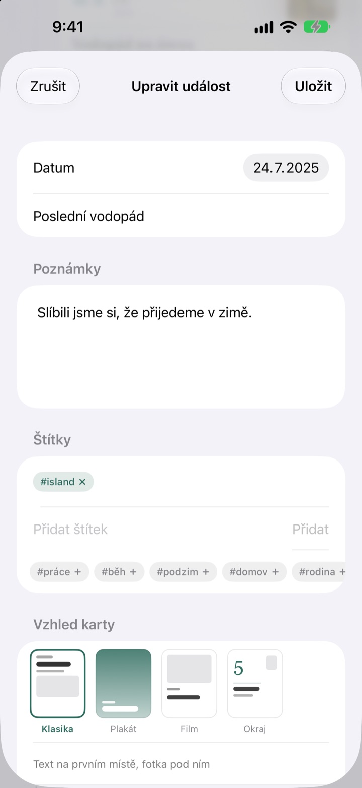

Časová osa,
která se natahuje s časem
Tři dny a pět dní stojí v poměru 3 : 5. Dlouhá pauza, třeba dva roky a čtyři měsíce, se složí do přerušované čáry. Už z rozestupů poznáte, jak tehdy plynul čas.
Všechny funkce jsou zdarma. Pro iPhone a iPad.

Roztáhněte rozestupy sami
Každé tlačítko přidá novou událost za tu poslední. Rozestupy se počítají podle stejného pravidla jako v aplikaci.
Ve fotkách čas neuvidíte
Knihovna fotek řadí všechno podle data, ale tři dny i dva roky v ní zabírají stejný jeden krok. Yeoul rozestaví události podle času, který mezi nimi uplynul, takže hned vidíte, kdy se toho dělo hodně a kdy bylo ticho.
Rozestup je čas
Celá osa má jediné měřítko: stejně dlouhé období je všude na obrazovce stejně dlouhé. U každého rozestupu je skutečná délka, třeba 3 d. nebo 5 měs. 21 d.
Velmi blízké události dostanou aspoň trochu místa a velmi dlouhé pauzy se složí do přerušované čáry.

Najde fotky z toho dne
Nastavte datum události a klepněte na Najít související fotky: uvidíte snímky pořízené ten den. Nic se nehodí? Přes Vybrat ručně si zvolíte sami.
Klepněte na událost na ose a fotka s textem se rozbalí přímo na místě.

Jeden štítek posbírá rozházené chvíle
Dejte událostem štítek jako #Island, klepněte na něj a všechny události s ním ze všech os se sejdou v nové.
Když ji uložíte, zůstane v seznamu a nové události se stejným štítkem do ní přibudou samy.

Ke každé chvíli vhodná karta
Klasika dává přednost textu, Plakát vyplní kartu fotkou, Film ji orámuje jako fotografii z laborky a Okraj nechá hlavní roli velkému datu. Náhled se změní hned.

Začnete ve třech krocích
- 1
Vytvořte časovou osu
První rok dítěte, vztah, cesta: každá dostane název a barvu.
- 2
Přidejte události
Napište datum a název a přidejte fotku z toho dne.
- 3
Přidejte štítky
Události se stejným štítkem se sejdou napříč osami.
Čtyři vzhledy karet
- Klasika
- Hlavní je text, fotka je pod ním.
- Plakát
- Fotka vyplní celou kartu a nahoře je velký nadpis. Bez fotky se karta vybarví barvou osy.
- Film
- Fotka s okrajem jako zvětšenina, písmo psacího stroje a razítko s datem.
- Okraj
- Velké číslo data a malá fotka. Tady hrají hlavní roli slova.
Nová událost začne se stejným vzhledem jako nejnovější karta na dané ose.
Všechny funkce jsou zdarma
Zdarma
- Libovolný počet časových os s názvem a barvou
- Fotky, příběhy a štítky u každé události
- Hledání fotek ze dne události
- Uložené časové osy štítků
- Čtyři vzhledy karet
- Synchronizace iPhonu a iPadu přes iCloud
- Zapisování přes Zkratky a Siri
Podpořte vývojáře
- Vyberte malé, střední nebo velké spropitné
- Nic se tím neodemyká. Je to jen poděkování
Najdete ho v nastavení aplikace, kdykoli budete chtít.
Žádné reklamy, žádné předplatné.
Časté otázky
Proč jsou rozestupy mezi událostmi tak různé?
Yeoul rozestaví události podle času, který opravdu uplynul. Všechny rozestupy mají stejné měřítko, takže tři dny a pět dní stojí v poměru 3 : 5. Velmi blízké události mají minimální rozestup, aby se nepřekrývaly, a velmi dlouhé pauzy se složí do přerušované čáry se skutečnou délkou, třeba 2 r. 4 měs.
Nevidím fotky z toho dne.
Hledání fotek podle data potřebuje přístup k fotkám. Povolte ho v Nastavení > Yeoul > Fotky. Yeoul hledá snímky pořízené od půlnoci do půlnoci daného dne v časovém pásmu zařízení. Pokud přístup dát nechcete, klepněte hned pod tím na Vybrat ručně.
Co je časová osa štítku?
Klepněte na štítek u události a Yeoul shromáždí všechny události s tímto štítkem ze všech vašich os do jedné. Ty, na které se díváte často, si můžete uložit do seznamu. Nic se nekopíruje: když upravíte původní událost, změna se projeví i tady, a smazáním osy štítku události nezmizí.
Proč nejde do osy štítku přidat událost?
Osa štítku je pohled sestavený podle štítku, ne místo, kde se události ukládají, takže nejde určit, kam by nová událost patřila. Přidejte ji do její vlastní osy se štítkem a objeví se tu sama.
Můžu něco zapsat bez otevření aplikace?
Ano. Použijte Zaznamenat událost v aplikaci Zkratky nebo se Siri a vyberte jen osu a název. Bez data se uloží aktuální čas.
Uvidím své osy i na dalších zařízeních?
Ano, na každém iPhonu a iPadu přihlášeném do iCloudu stejným Apple účtem. V Nastavení > vaše jméno > iCloud zkontrolujte, že je iCloud zapnutý. Podle připojení může chvíli trvat, než se změny objeví.
Jak smažu své záznamy?
V seznamu přejeďte po ose doleva nebo klepněte na Upravit. Se smazáním osy se smažou i její události. Co zůstalo v iCloudu, odstraníte ve správě úložiště v nastavení iCloudu.
Vidí vývojář mé záznamy?
Ne. Záznamy a fotky jsou uložené jen ve vašich zařízeních a ve vašem vlastním iCloudu, vývojář je nevidí. Podrobnosti najdete v zásadách ochrany soukromí níže.
Jak nahlásit chybu nebo navrhnout funkci?
Přímo z nastavení aplikace, e-mailem nebo na Instagramu @lee25_ios. Model zařízení, verze iOS a popis situace nám pomůžou rychleji.
Dotazy nebo nápady? Napište na leeo@kakao.com.